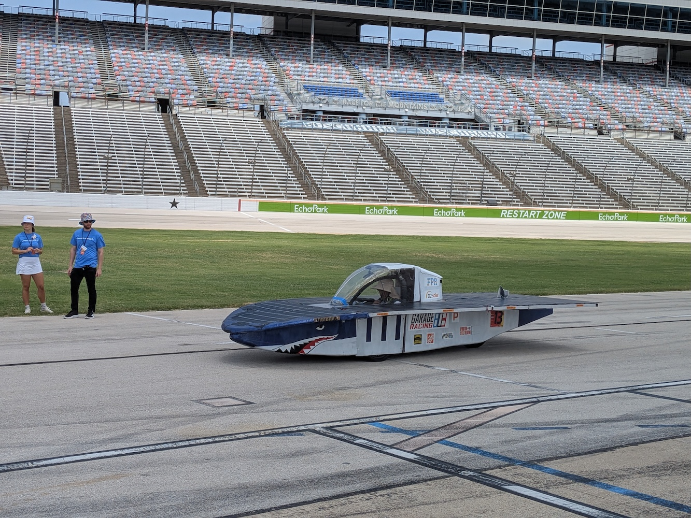
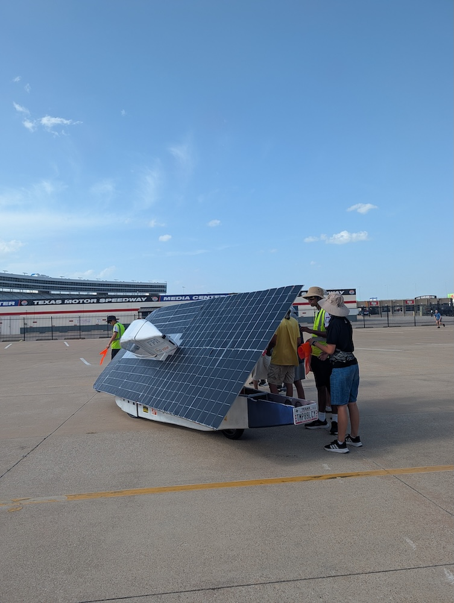
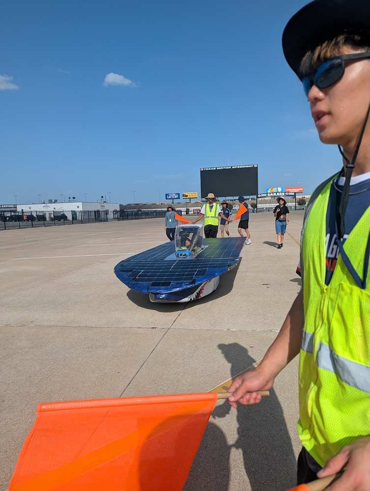
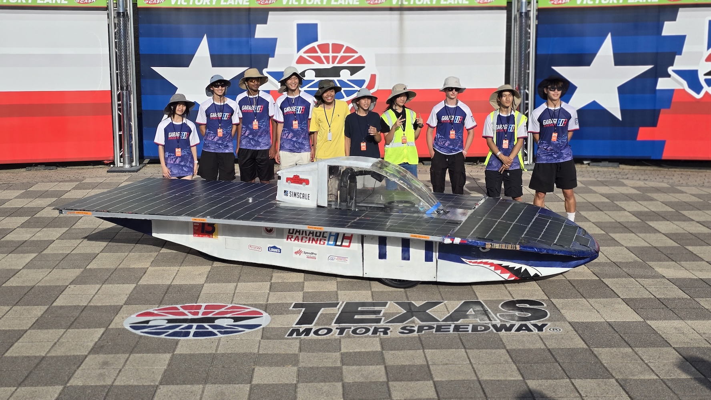

2026 Scrutineering Highlights
07/18/2026




If you closely followed our process with attending the Solar Car Challenge last year, or you are a part of a solar car team and have gone through scrutineering, you would be familiar with this process. How scrutineering works is the race crew conducts seven inspection stations to make sure the car is in good shape. This year we have an extra station compared to last year where the car is tested to ensure it can survive road conditions such as a truck passing by the car at high speeds.
Since we went through scrutineering last year, we remembered the takeaways we got and made adjustments to our car before scrutineering started so we could speed up the process. We started off with the braking, tilting and turning test which we passed with ease. During the rest of the scrutineering process, we worked on tidying up the electrical stations, reinforcing the safety cell, and did emergency drill tests. At the end, we managed to pass scrutineering with just around 35 minutes left to spare, qualifying us for the race. Thank you to all the teams who supplied us with the materials and support throughout the process, and it was nice being able to help the other teams as well.